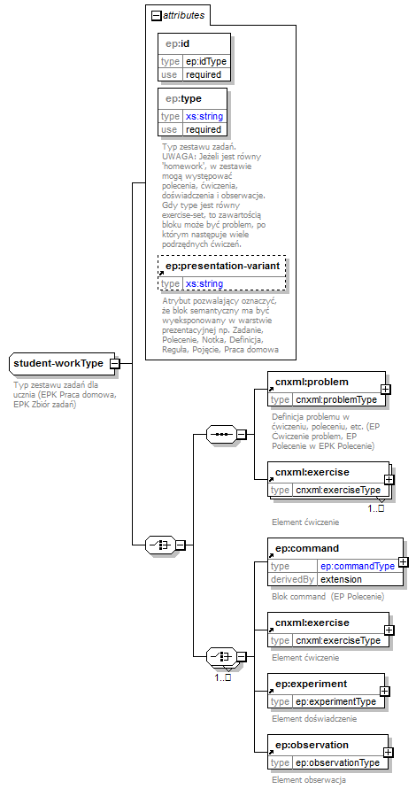

| diagram |  | ||||||||||||||||||||||||||||
| namespace | http://epodreczniki.pl/ | ||||||||||||||||||||||||||||
| children | cnxml:problem cnxml:exercise ep:command ep:experiment ep:observation | ||||||||||||||||||||||||||||
| used by |
|
||||||||||||||||||||||||||||
| attributes |
|
||||||||||||||||||||||||||||
| annotation |
|
||||||||||||||||||||||||||||
| source | <xs:complexType name="student-workType"> <xs:annotation> <xs:documentation>Typ zestawu zadań dla ucznia (EPK Praca domowa, EPK Zbiór zadań)</xs:documentation> </xs:annotation> <xs:choice> <xs:sequence> <xs:element ref="cnxml:problem"/> <xs:element ref="cnxml:exercise" maxOccurs="unbounded"/> </xs:sequence> <xs:choice maxOccurs="unbounded"> <xs:element ref="ep:command"/> <xs:element ref="cnxml:exercise"/> <xs:element ref="ep:experiment"/> <xs:element ref="ep:observation"/> </xs:choice> </xs:choice> <xs:attribute name="id" type="ep:idType" use="required"/> <xs:attribute name="type" use="required"> <xs:annotation> <xs:documentation>Typ zestawu zadań. UWAGA: Jeżeli jest równy 'homework', w zestawie mogą występować polecenia, ćwiczenia, doświadczenia i obserwacje. Gdy type jest równy exercise-set, to zawartością bloku może być problem, po którym następuje wiele podrzędnych ćwiczeń.</xs:documentation> </xs:annotation> <xs:simpleType> <xs:restriction base="xs:string"> <xs:enumeration value="homework"> <xs:annotation> <xs:appinfo> <xopus:documentation> <xopus:name xml:lang="en">Homework</xopus:name> <xopus:name xml:lang="pl">Praca domowa</xopus:name> </xopus:documentation> </xs:appinfo> </xs:annotation> </xs:enumeration> <xs:enumeration value="exercise-set"> <xs:annotation> <xs:appinfo> <xopus:documentation> <xopus:name xml:lang="en">Exercise set</xopus:name> <xopus:name xml:lang="pl">Zbiór zadań</xopus:name> </xopus:documentation> </xs:appinfo> </xs:annotation> </xs:enumeration> <xs:enumeration value="project"> <xs:annotation> <xs:appinfo> <xopus:documentation> <xopus:name xml:lang="en">Project</xopus:name> <xopus:name xml:lang="pl">Projekt</xopus:name> </xopus:documentation> </xs:appinfo> </xs:annotation> </xs:enumeration> </xs:restriction> </xs:simpleType> </xs:attribute> <xs:attribute ref="ep:presentation-variant"/> </xs:complexType> |
| namespace | http://epodreczniki.pl/ | |||||||||||||
| type | idType | |||||||||||||
| properties |
|
|||||||||||||
| facets |
|
|||||||||||||
| source | <xs:attribute name="id" type="ep:idType" use="required"/> |
| namespace | http://epodreczniki.pl/ | ||||||||||||||||||
| type | restriction of xs:string | ||||||||||||||||||
| properties |
|
||||||||||||||||||
| facets |
|
||||||||||||||||||
| annotation |
|
||||||||||||||||||
| source | <xs:attribute name="type" use="required"> <xs:annotation> <xs:documentation>Typ zestawu zadań. UWAGA: Jeżeli jest równy 'homework', w zestawie mogą występować polecenia, ćwiczenia, doświadczenia i obserwacje. Gdy type jest równy exercise-set, to zawartością bloku może być problem, po którym następuje wiele podrzędnych ćwiczeń.</xs:documentation> </xs:annotation> <xs:simpleType> <xs:restriction base="xs:string"> <xs:enumeration value="homework"> <xs:annotation> <xs:appinfo> <xopus:documentation> <xopus:name xml:lang="en">Homework</xopus:name> <xopus:name xml:lang="pl">Praca domowa</xopus:name> </xopus:documentation> </xs:appinfo> </xs:annotation> </xs:enumeration> <xs:enumeration value="exercise-set"> <xs:annotation> <xs:appinfo> <xopus:documentation> <xopus:name xml:lang="en">Exercise set</xopus:name> <xopus:name xml:lang="pl">Zbiór zadań</xopus:name> </xopus:documentation> </xs:appinfo> </xs:annotation> </xs:enumeration> <xs:enumeration value="project"> <xs:annotation> <xs:appinfo> <xopus:documentation> <xopus:name xml:lang="en">Project</xopus:name> <xopus:name xml:lang="pl">Projekt</xopus:name> </xopus:documentation> </xs:appinfo> </xs:annotation> </xs:enumeration> </xs:restriction> </xs:simpleType> </xs:attribute> |